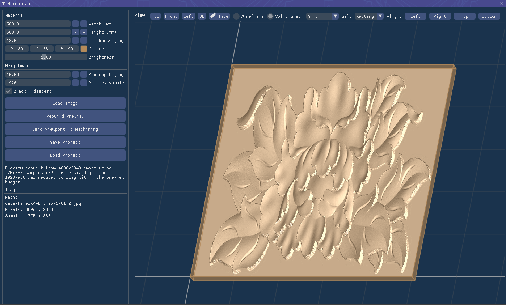
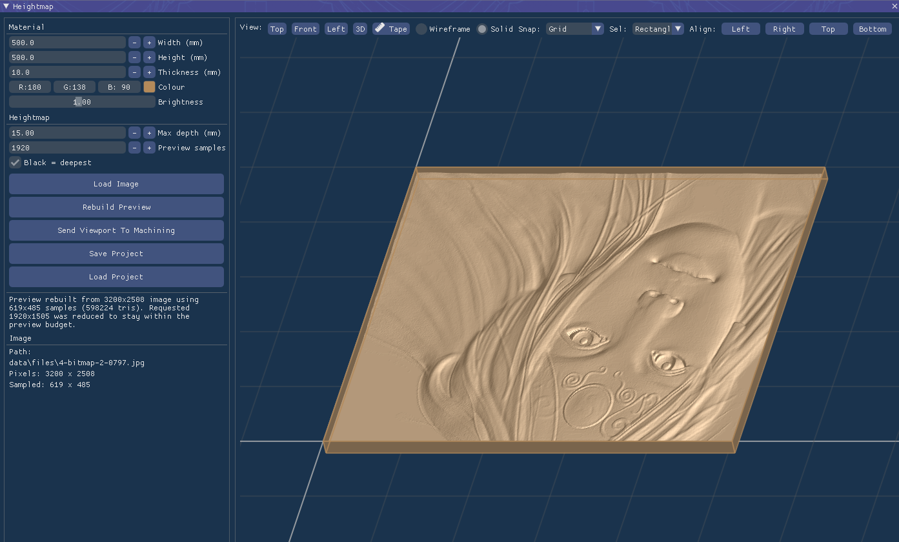
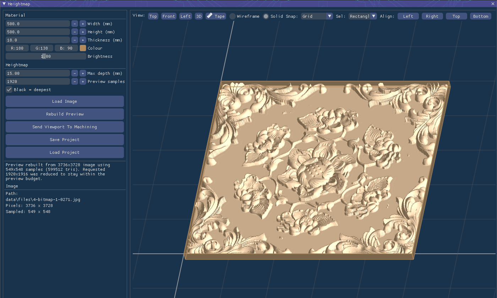

3D Toolpath Generation from Grayscale Images
The Heightmap 3D Module in GcodePlanner opens up new possibilities for creative and technical machining. It allows you to transform grayscale images, topographic maps, and 3D data into precise, high-quality 3D toolpaths for artistic carvings, relief maps, and textured surfaces.

High-Precision 3D Relief Mapping

Heightmap setup and parameter view

Detailed Texture & Surface Machining
Key Features
- Image-to-3D: Convert any standard image format (JPG, PNG, TIFF) into a 3D heightmap for machining.
- Topographic Support: Ideal for creating physical terrain models and geographic reliefs.
- Variable Resolution: Control the level of detail with adjustable sampling and stepover parameters.
- Advanced 3D Strategies: Roughing and finishing cycles designed for high-quality surface results.
- Z-Mapping: Precise control over Z-axis scaling and offset for various material thicknesses.
- Real-time 3D Simulation: Visualize the final result before sending it to the machine.
From artistic woodworking to specialized industrial textures, the Heightmap 3D module provides the tools needed to easily bridge the gap between 2D images and complex 3D physical objects.